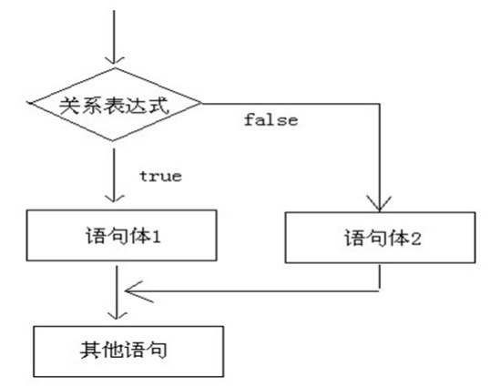
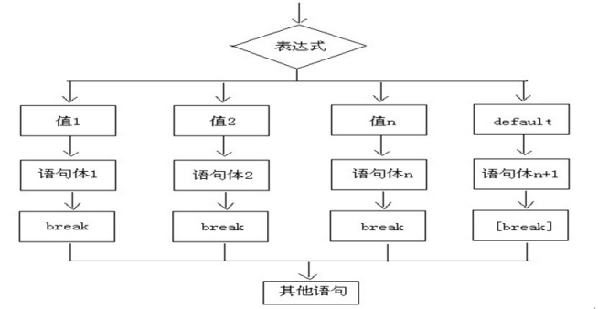

day03【 流程控制语句】今日内容教学目标第一章 流程控制1.1 概述1.2 顺序结构第二章 判断语句 2.1 判断语句1--if2.2 判断语句2--if...else2.3 判断语句3--if..else if...else2.4 语句练习2.5 if语句和三元运算符的互换第三章 选择语句3.1 选择语句--switch第四章 循环语句4.1 循环概述4.2 循环语句1--for4.3 循环语句2--while4.4 循环语句3--do...while4.5 循环语句的区别4.6 跳出语句breakcontinue第五章 扩展知识点5.1 死循环5.2 嵌套循环
day03【 流程控制语句】
今日内容
- if else判断语句
- switch选择语句
- for循环语句
- while循环语句
- do while循环语句
- 跳出语句break，continue
教学目标
理解if语句的格式和执行流程
理解if...else语句的格式和执行流程
理解if...else if语句的格式和执行流程
了解if语句和三元运算符互换
理解switch选择语句的格式和执行流程
了解switch选择语句接收的数据类型
了解case的穿透性
理解while语句的格式和执行流程
理解for语句的格式和执行流程
理解do...while语句的格式和执行流程
了解do...while循环的特点
了解跳出语句break，continue的意义
理解嵌套for循环的执行流程
第一章 流程控制
1.1 概述
在一个程序执行的过程中，各条语句的执行顺序对程序的结果是有直接影响的。也就是说，程序的流程对运行结果 有直接的影响。所以，我们必须清楚每条语句的执行流程。而且，很多时候我们要通过控制语句的执行顺序来实现 我们要完成的功能。
1.2 顺序结构
xxxxxxxxxx public static void main(String[] args){ //顺序执行，根据编写的顺序，从上到下运行 System.out.println (1); System.out.println (2); System.out.println (3);}第二章 判断语句
2.1 判断语句1--if
- if语句第一种格式： if
xxxxxxxxxx if(关系表达式)｛ 语句体;｝- 执行流程 首先判断关系表达式看其结果是true还是false 如果是true就执行语句体 如果是false就不执行语句体
xxxxxxxxxx public static void main(String[] args){ System.out.println ("开始"); // 定义两个变量 int a = 10; int b = 20; //变量使用if判断 if (a == b){ System.out.println ("a等于b"); } int c = 10; if(a == c){ System.out.println ("a等于c"); } System.out.println ("结束");｝2.2 判断语句2--if...else
- if语句第二种格式： if...else
xxxxxxxxxx if(关系表达式) { 语句体1;}else { 语句体2;}- 执行流程 首先判断关系表达式看其结果是true还是false 如果是true就执行语句体1 如果是false就执行语句体2 
xxxxxxxxxx public static void main(String[] args){ // 判断给定的数据是奇数还是偶数 // 定义变量 int a = 1; if(a % 2 == 0) { System.out.println ("a是偶数"); } else{ System.out.println ("a是奇数"); } System.out.println ("结束");}2.3 判断语句3--if..else if...else
- if语句第三种格式： if...else if ...else
xxxxxxxxxx if (判断条件1) { 执行语句1;} else if (判断条件2) { 执行语句2;}...}else if (判断条件n) { 执行语句n;} else { 执行语句n+1;}- 执行流程 首先判断关系表达式1看其结果是true还是false 如果是true就执行语句体1 如果是false就继续判断关系表达式2看其结果是true还是false 如果是true就执行语句体2 如果是false就继续判断关系表达式…看其结果是true还是false … 如果没有任何关系表达式为true，就执行语句体n+1。
xxxxxxxxxx public static void main(String[] args) { // x和y的关系满足如下： // x>=3 y = 2x + 1; //‐1<=x<3 y = 2x; // x<=‐1 y = 2x – 1; // 根据给定的x的值，计算出y的值并输出。 // 定义变量 int x = 5; int y; if (x>= 3) { y = 2 * x + 1; } else if (x >= ‐1 && x < 3) { y = 2 * x; } else { y = 2 * x ‐ 1; } System.out.println ("y的值是："+y); }2.4 语句练习
- 指定考试成绩，判断学生等级 90-100 优秀 80-89 好 70-79 良 60-69 及格 60以下 不及格
xxxxxxxxxx public static void main(String[] args) { int score = 100; if(score<0 || score>100){ System.out.println ("你的成绩是错误的"); }else if(score>=90 && score<=100){ System.out.println ("你的成绩属于优秀"); }else if(score>=80 && score<90){ System.out.println ("你的成绩属于好"); }else if(score>=70 && score<80){ System.out.println ("你的成绩属于良"); }else if(score>=60 && score<70){ System.out.println ("你的成绩属于及格"); }else { System.out.println ("你的成绩属于不及格"); } }2.5 if语句和三元运算符的互换
在某些简单的应用中，if语句是可以和三元运算符互换使用的。
xxxxxxxxxxpublic static void main(String[] args) { int a = 10; int b = 20; //定义变量，保存a和b的较大值 int c; if(a > b) { c = a; } else { c = b; } //可以上述功能改写为三元运算符形式 c = a > b ? a:b;}第三章 选择语句
3.1 选择语句--switch
- switch 语句格式：
xxxxxxxxxxswitch(表达式) { case 常量值1: 语句体1; break; case 常量值2: 语句体2; break; ... default: 语句体n+1; break;}- 执行流程 首先计算出表达式的值 其次，和case依次比较，一旦有对应的值，就会执行相应的语句，在执行的过程中，遇到break就会结 束。 最后，如果所有的case都和表达式的值不匹配，就会执行default语句体部分，然后程序结束掉。 
xxxxxxxxxx public static void main(String[] args) { //定义变量，判断是星期几 int weekday = 6; //switch 语句实现选择 switch(weekday ) { case 1: System.out.println("星期一"); break; case 2: System.out.println("星期二"); break; case 3: System.out.println("星期三"); break; case 4: System.out.println("星期四"); break; case 5: System.out.println("星期五"); break; case 6: System.out.println("星期六"); break; case 7: System.out.println("星期日"); break; default: System.out.println("你输入的数字有误"); break; } }switch语句中，表达式的数据类型，可以是byte，short，int，char，enum（枚举），JDK7后可以接收字符串。 3.2 case的穿透性 在switch语句中，如果case的后面不写break，将出现穿透现象，也就是不会在判断下一个case的值，直接向后运 行，直到遇到break，或者整体switch结束。
xxxxxxxxxx public static void main(String[] args) { int i = 5; switch (i){ case 0: System.out.println("执行case0"); break; case 5: System.out.println("执行case5"); case 10: System.out.println("执行case10"); default: System.out.println("执行default"); }}上述程序中，执行case5后，由于没有break语句，程序会一直向后走，不会在判断case，也不会理会break，直接 运行完整体switch。 由于case存在穿透性，因此初学者在编写switch语句时，必须要写上break。
第四章 循环语句
4.1 循环概述
循环语句可以在满足循环条件的情况下，反复执行某一段代码，这段被重复执行的代码被称为循环体语句，当反复 执行这个循环体时，需要在合适的时候把循环判断条件修改为false，从而结束循环，否则循环将一直执行下去，形 成死循环。
4.2 循环语句1--for
xxxxxxxxxxfor循环语句格式： for(初始化表达式①; 布尔表达式②; 步进表达式④){ 循环体③}- 执行流程 执行顺序：①②③④>②③④>②③④…②不满足为止。 ①负责完成循环变量初始化 ②负责判断是否满足循环条件，不满足则跳出循环 ③具体执行的语句 ④循环后，循环条件所涉及变量的变化情况
xxxxxxxxxx public static void main(String[] args) { //控制台输出10次HelloWorld，不使用循环 System.out.println ("HelloWorld"); System.out.println ("HelloWorld"); System.out.println ("HelloWorld"); System.out.println ("HelloWorld"); System.out.println ("HelloWorld"); System.out.println ("HelloWorld"); System.out.println ("HelloWorld"); System.out.println ("HelloWorld"); System.out.println ("HelloWorld"); System.out.println ("HelloWorld"); System.out.println ("‐‐‐‐‐‐‐‐‐‐‐‐‐‐‐‐‐‐‐‐‐‐‐‐‐"); //用循环改进，循环10次 //定义变量从0开始，循环条件为<10 for(int x = 0; x < 10;x++) { System.out.println ("HelloWorld"+x); }}循环练习：使用循环，计算1-100之间的偶数和
xxxxxxxxxx public static void main(String[] args) { //1.定义一个初始化变量,记录累加求和,初始值为0 int sum = 0; //2.利用for循环获取1‐100之间的数字 for (int i = 1;i <= 100; i++) { //3.判断获取的数组是奇数还是偶数 if(i % 2==0){ //4.如果是偶数就累加求和 sum += i; } } //5.循环结束之后,打印累加结果 System.out.println ("sum:" +sum);}4.3 循环语句2--while
- while循环语句格式：
xxxxxxxxxx初始化表达式① while(布尔表达式②){ 循环体③ 步进表达式④}- 执行流程
执行顺序：①②③④>②③④>②③④…②不满足为止。
①负责完成循环变量初始化。
②负责判断是否满足循环条件，不满足则跳出循环。
③具体执行的语句。
④循环后，循环变量的变化情况。
 while循环输出10次HelloWorld
while循环输出10次HelloWorld
xxxxxxxxxx public static void main(String[] args) { //while 循环实现打印10次HelloWorld //定义初始化变量 int i = 1; //循环条件<=10 while(i<=10){ System.out.println ("HelloWorld"); //步进 i++; }}while循环计算1-100之间的和
xxxxxxxxxx public static void main(String[] args) { //使用while循环实现 //定义一个变量,记录累加求和 int sum = 0; //定义初始化表达式 int i = 1; //使用while循环让初始化表达式的值变化 while(i<=100){ //累加求和 sum += i ; //步进表达式改变变量的值 i++; } //打印求和的变量 System.out.println ("1‐100的和是："+sum);}4.4 循环语句3--do...while
- do...while循环格式
xxxxxxxxxx初始化表达式① do{ 循环体③ 步进表达式④}while(布尔表达式②);- 执行流程 执行顺序：①③④>②③④>②③④…②不满足为止。 ①负责完成循环变量初始化。 ②负责判断是否满足循环条件，不满足则跳出循环。 ③具体执行的语句 ④循环后，循环变量的变化情况 输出10次HelloWorld
xxxxxxxxxx public static void main(String[] args) { int x=1; do { System.out.println("HelloWorld"); x++; }while(x<=10);}do...while循环的特点：无条件执行一次循环体，即使我们将循环条件直接写成false，也依然会循环一次。这样的循环具有一定的风险性，因此初学者不建议使用do...while循环。
xxxxxxxxxx public static void main(String[] args){ do{ System.out.println ("无条件执行一次"); }while(false);}4.5 循环语句的区别
- for 和 while 的小区别： 控制条件语句所控制的那个变量，在for循环结束后，就不能再被访问到了，而while循环结束还可以继续使用，如果你想继续使用，就用while，否则推荐使用for。原因是for循环结束，该变量就从内存中消 失，能够提高内存的使用效率。 在已知循环次数的时候使用推荐使用for，循环次数未知的时推荐使用while。
4.6 跳出语句
break
- 使用场景：终止switch或者循环 在选择结构switch语句中 在循环语句中 离开使用场景的存在是没有意义的
xxxxxxxxxx public static void main(String[] args) { for (int i = 1;i<=10; i++) { //需求:打印完两次HelloWorld之后结束循环 if(i == 3){ break; } System.out.println ("HelloWorld"+i); }}continue
- 使用场景：结束本次循环，继续下一次的循环
xxxxxxxxxxpublic static void main(String[] args) { for (int i = 1;i <= 10; i++) { //需求:不打印第三次HelloWorld if(i == 3){ continue; } System.out.println ("HelloWorld"+i); }}第五章 扩展知识点
5.1 死循环
- 死循环：也就是循环中的条件永远为true，死循环的是永不结束的循环。例如：while(true){}。 在后期的开发中，会出现使用死循环的场景，例如：我们需要读取用户输入的输入，但是用户输入多少数据我们并 不清楚，也只能使用死循环，当用户不想输入数据了，就可以结束循环了，如何去结束一个死循环呢，就需要使用 到跳出语句了。
5.2 嵌套循环
- 所谓嵌套循环，是指一个循环的循环体是另一个循环。比如for循环里面还有一个for循环，就是嵌套循环。总 共的循环次数=外循环次数*内循环次数
- 嵌套循环格式：
xxxxxxxxxxfor(初始化表达式①; 循环条件②; 步进表达式⑦) { for(初始化表达式③; 循环条件④; 步进表达式⑥) { 执行语句⑤; }}- 嵌套循环执行流程： 执行顺序：①②③④⑤⑥>④⑤⑥>⑦②③④⑤⑥>④⑤⑥ 外循环一次，内循环多次。 比如跳绳：一共跳5组，每组跳10个。5组就是外循环，10个就是内循环。
- 练习：使用嵌套循环，打印5*8的矩形
public static void main(String[] args) { //5*8的矩形，打印5行*号，每行8个 //外循环5次，内循环8次 for(int i = 0; i < 5;i++){ for(int j = 0; j < 8;j++){ //不换行打印星号 System.out.print("*"); } //内循环打印8个星号后，需要一次换行 System.out.println (); }｝